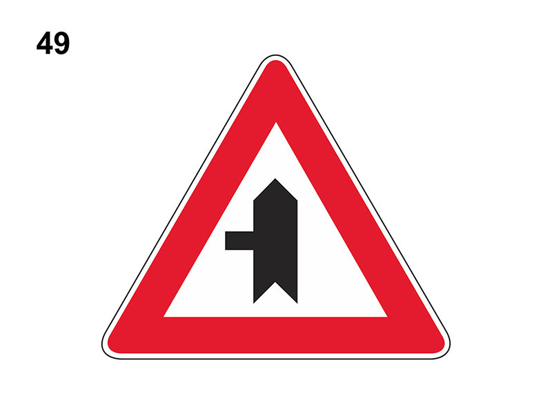

Intersezione a 'T' con diritto di precedenza

E' un segnale di prescrizione (precedenza).
Preannuncia un incrocio con una strada secondaria (senza diritto di precedenza) che si immette da sinistra (incrocio a 'T') in cui il conducente ha la precedenza sui veicoli provenienti da tale strada.
Impone comunque di rallentare, accertandosi che i veicoli incrocianti siano disposti a dare la precedenza.
Non è vero che è posto sulle rampe di accesso alle autostrade.
Preannuncia un incrocio con una strada secondaria (senza diritto di precedenza) che si immette da sinistra (incrocio a 'T') in cui il conducente ha la precedenza sui veicoli provenienti da tale strada.
Impone comunque di rallentare, accertandosi che i veicoli incrocianti siano disposti a dare la precedenza.
Non è vero che è posto sulle rampe di accesso alle autostrade.